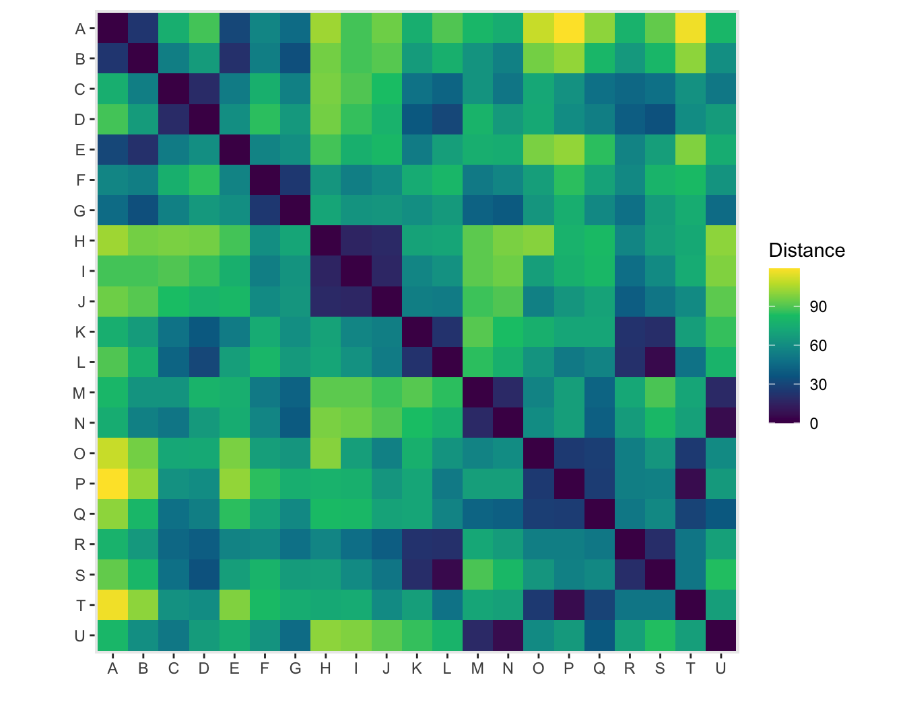

Code
# Long format: one row per vertex pair. d = original distance,
# new_d = revised distance (only for some pairs)
dist_long <- read_csv(here::here("data", "distances-new.csv"), skip = 1,
col_names = c("V1", "V2", "d", "m", "delta", "new_d"),
col_select = 1:6, show_col_types = FALSE)
vertices <- sort(unique(c(dist_long$V1, dist_long$V2)))
to_matrix <- function(df, value) {
m <- matrix(0, length(vertices), length(vertices),
dimnames = list(vertices, vertices))
m[cbind(df$V1, df$V2)] <- df[[value]]
m[cbind(df$V2, df$V1)] <- df[[value]]
m
}
dist_long <- dist_long |>
mutate(d_rev = coalesce(new_d, d)) # use revised value when we have one
D0 <- to_matrix(dist_long, "d") # original distances
D <- to_matrix(dist_long, "d_rev") # revised distances
D |>
as.data.frame() |>
rownames_to_column("from") |>
pivot_longer(-from, names_to = "to", values_to = "d") |>
mutate(from = factor(from, levels = rownames(D)),
to = factor(to, levels = rev(rownames(D)))) |>
ggplot(aes(from, to, fill = d)) +
geom_tile() +
scale_fill_continuous_sequential("Viridis", rev = FALSE) +
coord_equal() +
labs(x = "", y = "", fill = "Distance") +
theme(panel.grid = element_blank())